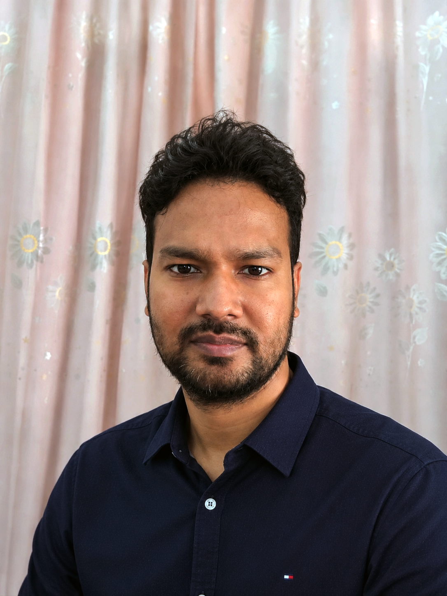

Software architecture
& .NET engineering
Maintainable systems, secure APIs, and clear boundaries that help products grow without losing their foundations.
ENGINEERING LEADER. HANDS-ON BUILDER.
I’m Rana Hamid — a Development Manager who connects deep technical craft with people leadership to build software that matters.

I’ve spent more than a decade turning complex business needs into dependable software — from ERP systems that connect entire organizations to healthcare platforms that support patients and clinicians.
At MyMedicalHUB, I lead across backend, frontend, mobile, and AI engineering. I stay close to the architecture and the code, while helping people grow and teams deliver with confidence.
My approach is simple: understand the problem, build with care, and make the team stronger along the way.
Software engineering experience
Backend, frontend, mobile & AI
Academic excellence, 2014
WHERE I MAKE A DIFFERENCE
From the first architecture decision to a dependable production release, I bring the whole picture into focus.
Maintainable systems, secure APIs, and clear boundaries that help products grow without losing their foundations.
Hands-on Business Central and NAV expertise, connecting ERP workflows to the way an organization actually operates.
Azure services, delivery automation, and AI-assisted workflows that solve practical product and operational problems.
Teams with clear ownership, thoughtful technical standards, and a shared understanding of what success looks like.
SELECTED WORK
A selection of the products and enterprise systems I’ve helped build, shape, and deliver.
Selected professional contributions. Project artwork is an original visual interpretation, rather than a product screenshot.
THE JOURNEY SO FAR
From writing my first production systems to leading multidisciplinary engineering teams. Always building. Always learning.
Get the full CVMyMedicalHUB International Ltd. Florida, USA · Remote
Lead backend, frontend, mobile, and AI engineering for healthcare and sports platforms. Own architecture direction, team development, delivery, and production reliability.
MyMedicalHUB International Ltd. Florida, USA · Remote
Led platform delivery, established modular architecture and secure APIs, and brought product and engineering teams together around maintainable software.
Toggi Services Ltd. Dhaka, Bangladesh
Customized Dynamics 365 Business Central solutions for international clients across real estate, project services, healthcare, and distribution.
Multiversal Software Ltd. Dhaka, Bangladesh
Built Dynamics NAV and C# enterprise applications, integrated third-party services, and automated business data workflows.
Atom AP Limited Dhaka, Bangladesh
Developed real-time trading software and employee attendance systems with ASP.NET MVC, SignalR, and external platform APIs.
FOUNDATIONS & RECOGNITION
Academic excellence, professional credentials, and a lasting love for solving hard problems.
Engineering Faculty First · CGPA 3.79
Certifications earned across the Microsoft business applications ecosystem.
MB6-894 · MB6-895
MB2-717 · MB2-716 · MB2-715
MCSA · MCSE
FE examination · JICA
F&O credentials complement my primary hands-on specialization in Business Central and NAV.
Competitive programming keeps my thinking sharp — one algorithm, one challenge, one better solution at a time.
LET’S BUILD SOMETHING THAT MATTERS
DHAKA, BANGLADESH · WORKING GLOBALLY
Have an engineering challenge, a leadership opportunity,
or a product worth building? I’d love to hear about it.